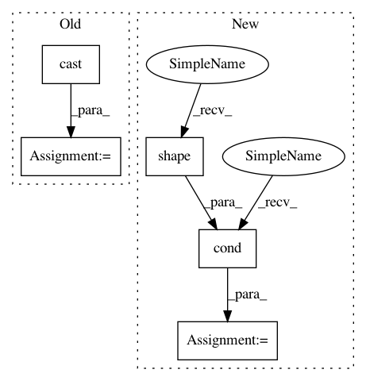

58086fa0a4fdd7c72a9ca51746a754fbd6644b91,models/official/detection/dataloader/tf_example_decoder.py,TfExampleDecoder,decode,#TfExampleDecoder#Any#,90
Before Change
image = self._decode_image(parsed_tensors)
boxes = self._decode_boxes(parsed_tensors)
is_crowd = tf.cast(parsed_tensors["image/object/is_crowd"], dtype=tf.bool)
if self._include_mask:
masks = self._decode_masks(parsed_tensors)
decoded_tensors = {
After Change
image = self._decode_image(parsed_tensors)
boxes = self._decode_boxes(parsed_tensors)
areas = self._decode_areas(parsed_tensors)
is_crowds = tf.cond(
tf.greater(tf.shape(parsed_tensors["image/object/is_crowd"])[0], 0),
lambda: tf.cast(parsed_tensors["image/object/is_crowd"], dtype=tf.bool),
lambda: tf.zeros_like(parsed_tensors["image/object/class/label"], dtype=tf.bool)) // pylint: disable=line-too-long
if self._include_mask:
masks = self._decode_masks(parsed_tensors)
In pattern: SUPERPATTERN
Frequency: 3
Non-data size: 5
Instances
Project Name: tensorflow/tpu
Commit Name: 58086fa0a4fdd7c72a9ca51746a754fbd6644b91
Time: 2019-08-06
Author: gardener@tensorflow.org
File Name: models/official/detection/dataloader/tf_example_decoder.py
Class Name: TfExampleDecoder
Method Name: decode
Project Name: tensorflow/tpu
Commit Name: e2854fe95203e52bd2a5967b9e5cd9b2abbdf1bf
Time: 2019-08-05
Author: pengchong@google.com
File Name: models/official/detection/dataloader/tf_example_decoder.py
Class Name: TfExampleDecoder
Method Name: decode
Project Name: tensorflow/models
Commit Name: cae2622bdb0b990091c6e4cb1b0d91858368b619
Time: 2020-10-22
Author: anirudh.vegesana@gmail.com
File Name: official/vision/beta/dataloaders/classification_input.py
Class Name: Parser
Method Name: _parse_train_data